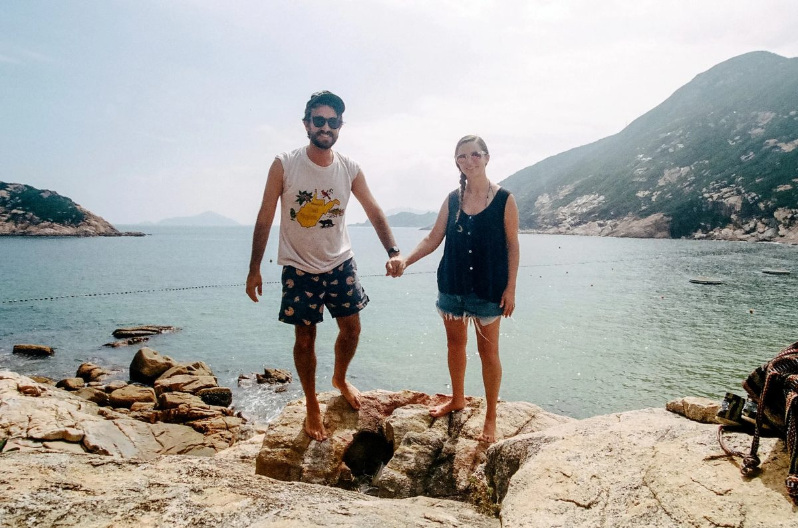

Look! It’s Ian and Kellyn!
In the United States we spend most of our time visiting National Parks, while in Europe and Asia we worked on crossing places off our very long list.
The title of this site relates to a program created by the United Nations Educational, Scientific and Cultural Organization (Unesco) shortly after World War II. The program’s purpose was to prevent an apocalyptic third world war by promoting intercultural understanding. At the time many thought the fundamental cause of international conflict was humanity’s failure to realize the ideals of a world community and that we are all grounded in common values.
To understand yourself in the diverse and global world, you have to understand others. Travel helps with this.
“…an observation is objective if it is the creation of many inquirers with many different points of view.” True objectivity, then, is not a position; it is an achievement. It is the view from everywhere.